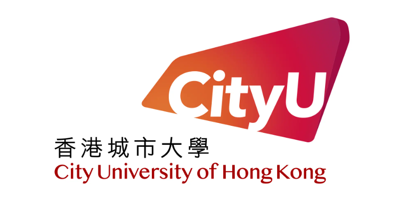
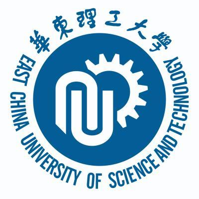
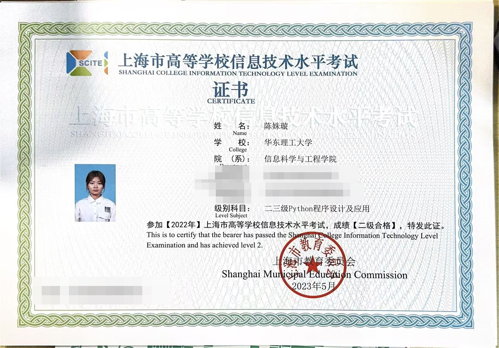
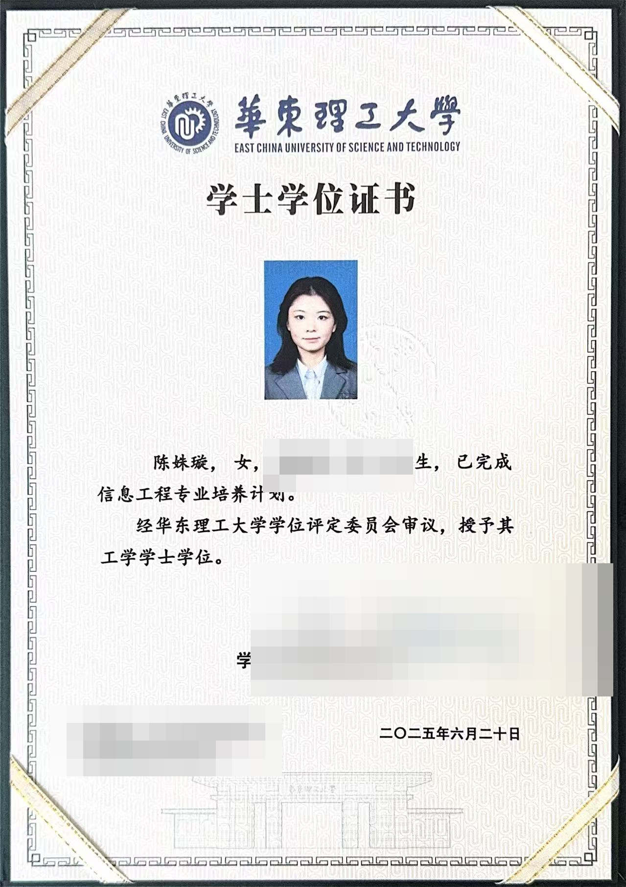
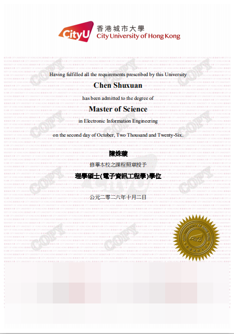
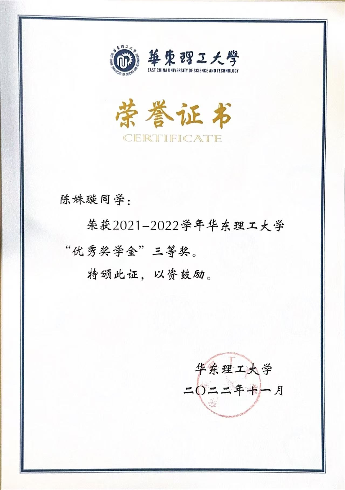
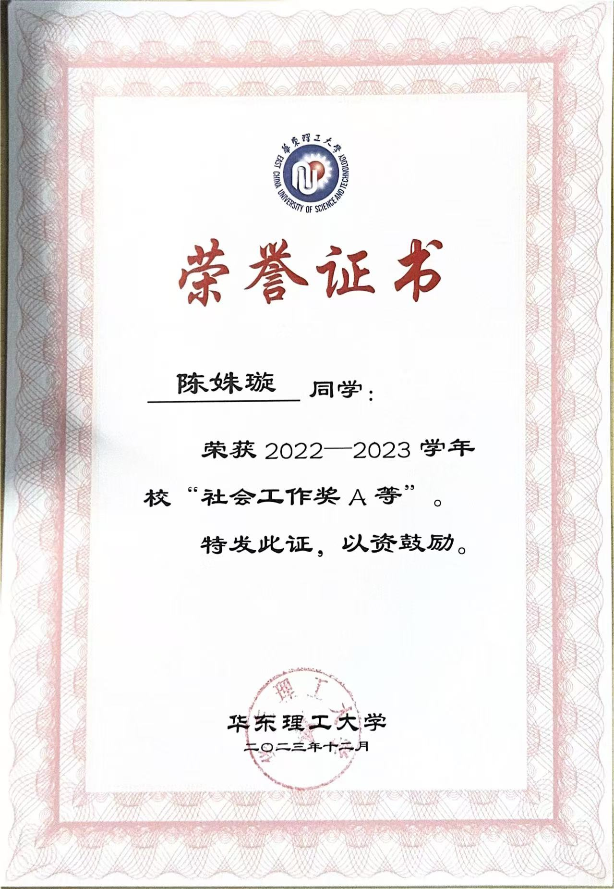
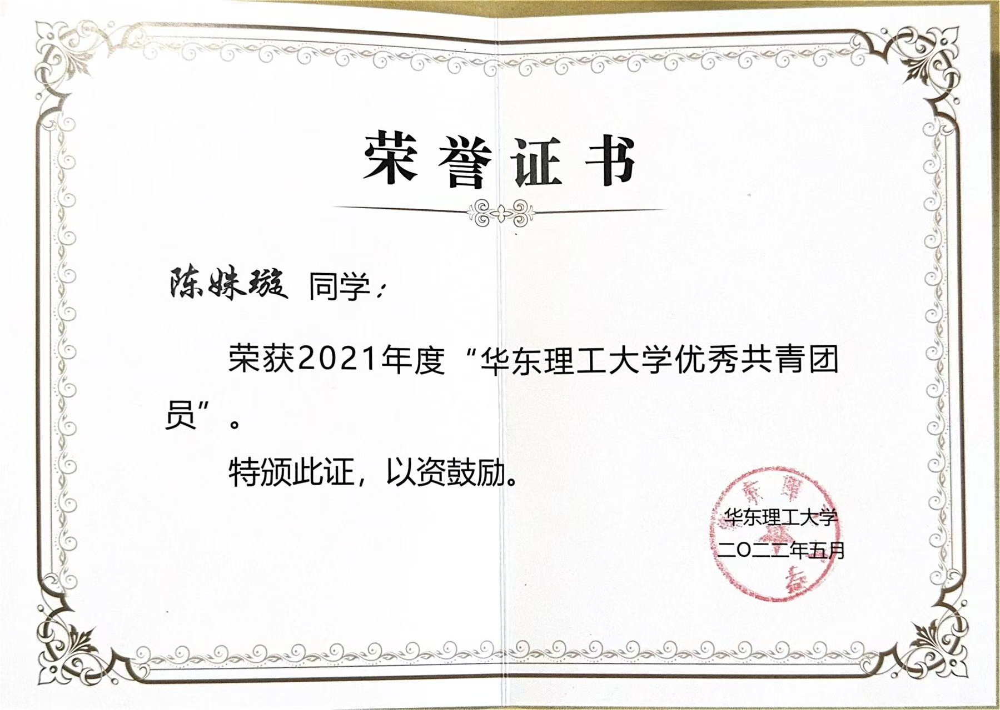
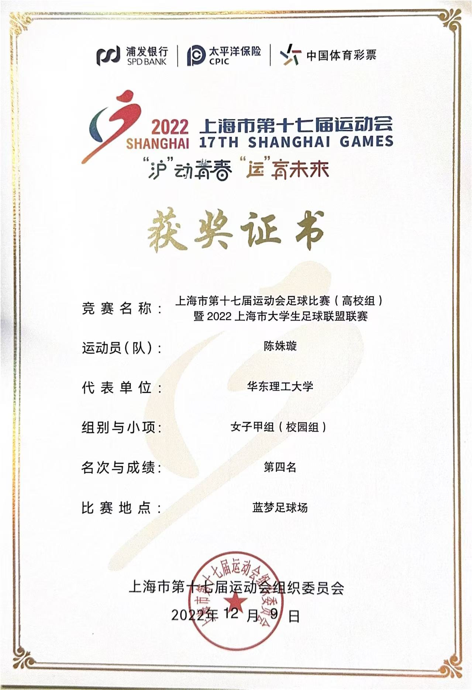
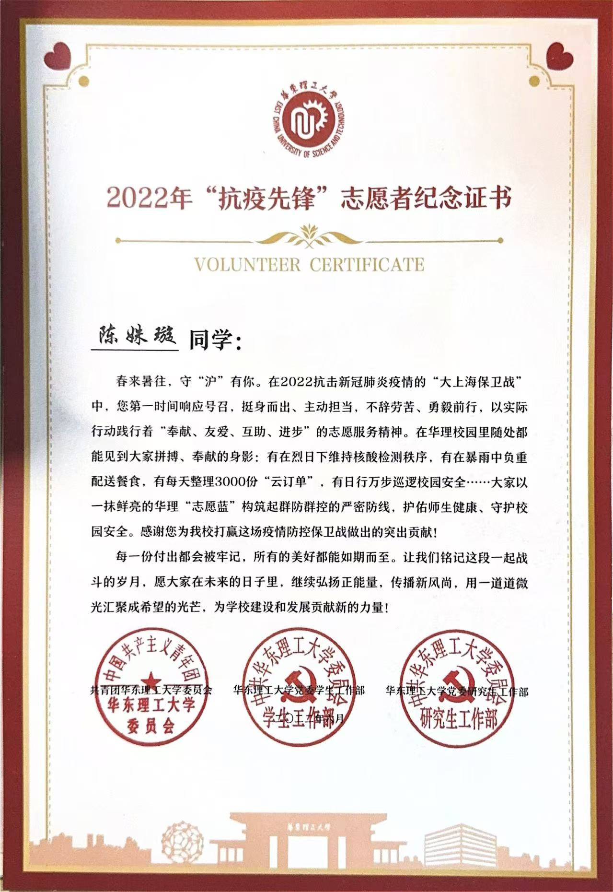

01 / Education
学校与专业
香港城市大学 电子信息工程EIE · MSc
华东理工大学 信息工程 · 工学学士
Curriculum Vitae / 2026
Electronic Information Engineering
香港城市大学 EIE电子信息工程硕士，华东理工大学 信息工程本科。 具备 STM32、ESP32 开发经验，能独立完成硬件设计、驱动程序、运动控制与项目文档； 有软件编程经验，熟练掌握Java、Python，MATLAB等编程语言。
01 / Education
香港城市大学 电子信息工程EIE · MSc
华东理工大学 信息工程 · 工学学士
02 / Development
ESP32 · STM32
硬件设计 / 驱动开发 / 运动控制 / 调试交付
03 / Language
IELTS 6.5 · CEFR B2
Listening 7.0 · Reading 7.0
Writing 6.0 · Speaking 6.0
01 / Education
电子信息工程背景，覆盖软硬件系统、数据分析与工程实践。
Master of Science
电子信息工程EIE · MSc
Electronic Information Engineering。主要课程深度学习、复杂网络与安全技术等。

Bachelor of Engineering
信息科学与工程学院 · 信息工程 · 学士
完成信息工程本科培养计划，2025 年获授工学学士学位。

02 / Experience
参与从硬件搭建、嵌入式开发到调试交付的完整工程流程。
Internship / Hardware & Embedded Software
实习 · 轨道标记设备项目
Internship / Embedded Driver Development
实习 · 墨水屏驱动开发
03 / Credentials
证书横向滑动查看；技能按开发、硬件、调试与工具分类呈现。
Certifications
CEFR B2

查看大图 ↗Python 语言

查看大图 ↗信息工程 · 华东理工大学

查看大图 ↗香港城市大学
拖动横条或使用箭头浏览
Skills
Python · MATLAB · Java · Android Studio
ESP32 · STM32F103 · 单片机原理 · Multisim
模电数电 · 原理图 · 焊接 · 示波器 · 万用表 · 功率分析仪
数据分析 · 复杂网络 · 模型训练 · MS Office · WPS Office
04 / Projects
从医疗诊断算法到机电系统，覆盖技术研究、团队推进与工程交付。
大学生创新项目技术负责人，负责数据分析、模型选择与预训练； 带队参加大学生“互联网+”创新创业大赛，负责技术方案与答辩支撑，获校级三等奖。
基于 Swin Transformer 进行少样本故障分类研究，复现 IEEE 论文方法， 完成模型实验并取得较高分类准确率。
完成电子实习项目从焊接、调试到功能验证的完整流程。
使用 Android Studio 完成移动端单词学习应用开发。
Student Leadership
05 / Recognition
荣誉均配有对应证书图片，点击图片可查看原图并横向滑动浏览。
Honors & Activities

查看证书 ↗ 优秀奖学金三等奖2021—2022 学年 · 华东理工大学
颈动脉斑块诊断平台 · 项目组成员

查看证书 ↗ 社会工作奖2022—2023 学年 · A 等

查看证书 ↗ 优秀团员华东理工大学优秀共青团员

查看证书 ↗ 市运会足球比赛第四名女子甲组（校园组） · 华东理工大学

查看证书 ↗ 抗疫先锋志愿者2022 年校园防疫志愿服务
06 / Working Style
这些描述来自实际经历中的工作表现，而不是抽象的性格标签。
习惯先拆解系统与问题，再推进硬件、软件和文档的协同落地。
能够独立承担端到端任务，关注细节、调试过程与最终交付。
在技术负责人和学生会工作中，主动沟通、补位并推动团队前进。